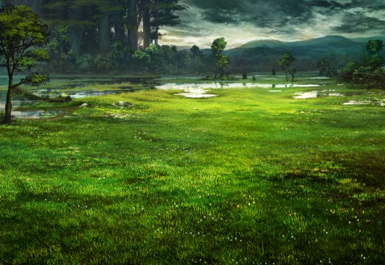

エリーゼ
ハァ……ハァ……。 リムちゃん、大丈夫だった！？
リム
はい、私も先輩も大丈夫です。 あとセラちゃんも…
セラ
ブラン、お願い…… あなたがいなくなったら、私……。
エリーゼ
緊急処置を施しました。 とりあえずは大丈夫だと思います。
セラ
ありがとうございます…。 よかった、ブラン…。
エリーゼ
ふふっ、この辺りでは見かけない 可愛らしい動物ですね。
セラ
２週間前、仕事のミスで落ち込んだ私は １人になりたくて、ここに来ました。
セラ
その時、この子が…ブランが慰めるように 私に寄り添ってくれたんです。
セラ
最初は迷惑だと思っていましたが、 いつの間にか愛着がわき始めて…
セラ
そして、いつしか私はこの場所でブランに 会うことが楽しみになったんです。
セラ
でも、ブランは魔物…。 おそらく、ルスの系統だと思います。
セラ
稀少生物らしく、図書館の本にも 載っていませんでしたが…
セラ
白い綿毛のルスには、人に害をなす成分が 多分に含まれてると風の噂で聞きました。
セラ
だから、人気のないこの場所で 会うことにしていたんです。
エリーゼ
でも、この子は怪我をしているし、 なるべく早く看てもらわないと……。
エリーゼ
ルスの亜種ではありますが、この子は人体に 影響を与えない生物です。
セラ
それでは、私の取り越し苦労だったと いうわけですね。
セラ
でも、もうこれで堂々と召喚院の中に 持ち込むことができます…。
リム
いや～、セラちゃんの悩みが解決して 良かったです！
リム
だったら、初めからこんな風にコソコソと 付け回さなくてもよかったですね。
セラ
…そういえば、あなた達、なんでコソコソと 私の後を付け回っていたんですか？
リム
そ、それは、セラちゃんの様子がいつもと 違ってたから…
リム
私もエリーゼさんも友達として 心配になって…。
セラ
あまりにもしつこい場合は、 被害者の申し立てにより、加害者を…
エリーゼ
私たちは、セラちゃんの隠された 乙女な一面をしっかり握っていますから♪
リム
今回もご迷惑おかけしちゃいましたが、 やっぱり頼もしかったです！
リム
また、何か事件があったら お手伝い、よろしくお願いしますね♪